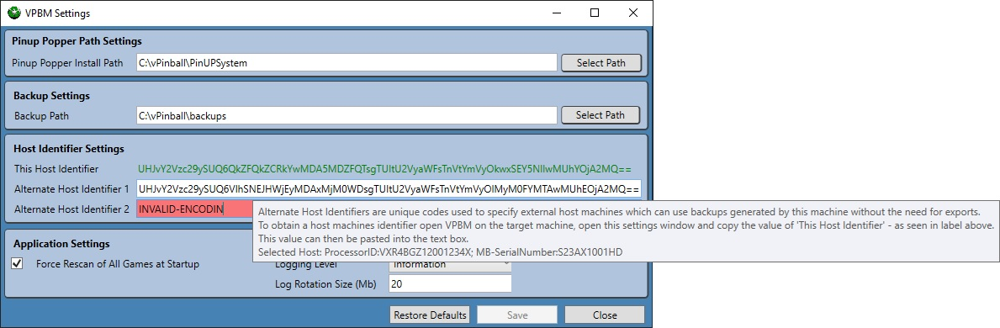

Virtual Pinball Backup Manager - managing your backups, one game at a time
Settings Overview
Settings are used to control finer details of how VPBM will operate. There are multiple ways of modifying settings targeting different experience levels.
Most users will be able to do all that they need using the File->Settings menu which provides an integrated GUI to set the majority of application settings, with more advanced settings used to customise configured emulators and filters available via the Emulator and Filter Settings window, also launched from the File menu.
Settings Menu
The Settings menu option found in the File menu provides a easy to use method for changing basic application settings.

The Restore Defaults button can be used to restore available settings back to the default values.
The Save button can be used to save settings changes that have been made. Performing a save will restart the system so that the settings changes can take effect. The Save button is only enabled when there are valid changes to save. Values which have changed are shaded with a yellow background to highlight the proposed changes to the user.
The following values can be set:
Pinup Popper Install Path
This value is stored in the settings file as Pinup/PinupDir and represents the installed location of Pinup Popper. In a normal Baller Installer install, this sits inside Visual Pinball Base Path. This value can be relative to Visual Pinball Base Path (if it resides inside) or stored as an absolute path. The value will be saved as a relative value if it is inside Visual Pinball Base Path.
Backup Path
This value is stored in the settings file as BackupPath and represents the path that backups will be stored in. By default it is set to sit inside the VpinballBasePath, however in normally operation this is unlikely as backups will generally be stored on a separate disk, or even network drive. Example values for this include: D:\\backups and \\mynetworkserver\\C$\\pinballBackups, where the first example uses a backup folder on the D drive, and the second option connects to a network drive.
This Host Identifier
This value provides a read only view of the current machines host identifier which can be copied into another VPBM instances Alternate Host Identifier 1 or Alternate Host Identifier 2 field. All games backed up by VPBM on this machine will use this host identifier to lock the backup files. Any backups imported to this machine from other machines must have had this machine encoded when created using the alternate host approach.
VPBM has been designed such that backups cannot be freely shared. To achieve this, when backups are written, they are encoded with information about the host they were generated on, and up to two alternate hosts that they can be shared with. These fields allow these alternate host identifiers to be set.
There is more information on this security model in Backup File Management.
To obtain the code to use to support configuring alternate hosts, a copy of VPBM must be installed on the intended other host (which is required to process backups regardless). Open the VPBM instance on the other host and open the corresponding Settings dialog (this dialog). Once on the Settings dialog, select and copy the (green) This Host Identifier text value and copy this text to this machine via any available means. The value obtained can then be pasted into the Alternate Host Identifier 1/2 text field to specify this host.
Hovering over the text field (if valid) will provide a description of the proposed host in a tooltip.
Force Rescan of All Games at Startup
By default, at startup, all file content of all games is re-scanned to ensure VPBM provides an up-to-date picture of the system. For large collections this can be time consuming. Disabling this checkbox will result in scans only occurring for games without an existing manifest. This can save time but may result in out of date information being displayed. a Refresh Selected Rows button is provided on the Installed Games panel to allow these games to be rescanned at any time. This option can be used when it is known that system changes haven't occurred between runs of VPBM.
Logging Level
Provides the ability to alter the level of log detail produced. There are 6 levels available, in order from most granular to least, they are: Verbose, Debug, Information, Warning, Error, Fatal. The default level of Information is generally a suitable level to use, Verbose, or Debug would generally only be used by developers, while setting logging to Warning, Error, Fatal will reduce logging to only log in cases where abnormal events have occurred.
Log Rotation Size (Mb)
All log files are rotated daily. This value allows users to rotate logs based on the size of the log, such that when logs reach the specified size, the active log file is stored and a new log file initiated. A value of 0 indicates that no size based rotation will take place. Any other value indicates the size (in Mb) at which the log will be rotated. A maximum value of 200 is allowed.